この資料を読み終えると、以下のことが理解できるようになります：
前提知識：結晶学の基礎（単位格子、格子定数の定義）、量子化学入門レベル（DFTの概念）
高エントロピー合金（HEA: High-Entropy Alloy）とは、5種類以上の金属元素をほぼ等量で混合した合金です。 従来の合金（例：鉄+炭素=鋼）と異なり、多元素混合による「カクテル効果」で特異な物性（高強度・耐食性・耐熱性）を発現します。
格子定数 $a$ は結晶の「ユニットセルの大きさ」を表す基本量で、HEAの密度・強度・相安定性に直結します。 しかし、5元素以上の組み合わせは膨大（38元素から5個選ぶだけで50万通り以上）で、全てを実験で測定するのは不可能です。
目標：元素の組成 $\{c_i\}$ だけを入力として、HEAの格子定数 $a$ を高精度に予測する計算式を構築する。
格子定数は合金の「指紋」とも言えるパラメータです。これが分かると：
最も単純な予測式。合金の格子定数を「成分元素の格子定数の加重平均」とする：
ここで $c_i$ は元素 $i$ の原子分率、$a_i$ はその純金属の格子定数。 原子をビリヤードの球のように扱い、「大きい原子が多いほど格子は大きい」という直観に基づく。
等モル4元素合金 CoCrFeNi (FCC) を考える：
$a_\text{Vegard} = 0.25 \times (3.545 + 3.633 + 3.571 + 3.524) = 3.568$ Å
実験値：$a_\text{exp} = 3.572$ Å → 誤差 0.004 Å（良好）
しかし、耐火金属系（HfNbTaTiZrなど）では原子サイズ差が大きく、Vegard則の誤差が0.02 Å以上に増大する。
精度：RMSE ≈ 0.023 Å（本研究のデータセットで評価）。「第0近似」として優秀だが改善の余地がある。
Vegard則の改良。二元系合金 A-B を混ぜると、原子サイズの差で格子が膨張/収縮する。 この「Vegardからのズレ」を体積サイズファクター $\Omega_\text{sf}$ と呼ぶ：
Kingの時代は実験データから $\Omega_\text{sf}$ を求めたが、本研究では第一原理計算（DFT）で8,521件の二元系化合物から系統的に計算した。
純銅（原子半径 1.28 Å）に純金（原子半径 1.44 Å）を少量加える場面を想像してください。
$\Omega_\text{sf} > 0$ → Vegardより体積が大きい（膨張）
$\Omega_\text{sf} < 0$ → Vegardより体積が小さい（収縮）
$\Omega_\text{sf} = 0$ → ちょうどVegard通り（理想混合）
King-Vegard式にDFT由来の $\Omega_\text{sf}$ を組み込む：
$n_\text{auc}$: 単位格子内原子数（BCC=2, FCC=4）
$V_i$: 元素 $i$ の原子体積（King実験値）
$q_s$: 構造依存スケーリング定数（BCC: 0.49, FCC: 0.13）
$\Omega_\text{sf}^{(s)}$: 構造 $s$（B2またはL1$_2$）でのDFT体積サイズファクター
格子定数は $a = (n_\text{auc} \sum c_i V_\text{eff}(i))^{1/3}$ で得る。
多くのHEAは BCC（体心立方）または FCC（面心立方）の単純構造を取ります。 多元素がランダムに各格子点を占有する「置換型固溶体」です。
配位数: 8
単位格子内原子数: 2
代表的HEA: HfNbTaTiZr, MoNbTaVW
特徴: 耐火金属(Hf,Mo,Nb,Ta,Ti,V,W,Zr)が多い。高融点・高強度。
配位数: 12
単位格子内原子数: 4
代表的HEA: CoCrFeNi, CoCrFeMnNi
特徴: 3d遷移金属が多い。高延性・加工性に優れる。
本研究ではDFT計算の参照構造として秩序構造を使います：
| B2 (CsCl型) | L1$_2$ (Cu$_3$Au型) | |
|---|---|---|
| 構造 | BCCの秩序版 | FCCの秩序版 |
| 組成 | AB（等モル二元系） | A$_3$B（3:1二元系） |
| 配位数 | 8（BCCと同じ） | 12（FCCと同じ） |
| 原子数/セル | 2 | 4 |
| 秩序パラメータ $\alpha$ | $-1$（完全秩序） | $-1/3$（部分秩序） |
| DFT計算の利点 | 2原子で計算完了 | 4原子で計算完了 |
| HEA用途 | BCC HEAの $\Omega_\text{sf}$ 算出 | FCC HEAの $\Omega_\text{sf}$ 算出 |
DFT（Density Functional Theory）は、電子のSchrödinger方程式を 電子密度 $n(\mathbf{r})$ を変数として解く量子力学的計算法です。
各項の意味：
DFTは「仮想的な実験」です。実験では測定困難な二元系（例：W-Zr合金は混じらないので作れない）でも、 コンピュータ上でB2構造を仮定してDFT計算すれば $\Omega_\text{sf}$ を求めることができます。
従来：King実験値は〜200ペアのみ → 多くのペアが欠損
本研究：DFTで全ペアを網羅 → B2: 473ペア、L1$_2$: 703ペア
Alonso, Rave, Perea & Salazar (2021) は、King (1966) の体積サイズファクター $\Omega_\text{sf}$ を 多成分HEAに初めて系統的に適用した論文です。64個の立方晶HEAに対して格子定数を予測し、 当時の最良精度 RMSE ≈ 0.023 Å を報告しました。
Alonsoの中心式は、Kingのサイズファクターを多成分に拡張したものです：
各項の意味：
格子定数への変換: $a = V_\text{uc}^{1/3}$（立方晶の場合）
$\Omega_{\text{sf},\, j/i}$ は「溶媒 $i$ の中に溶質 $j$ を希薄に溶かしたとき、格子がどれだけ膨張/収縮するか」を表す量です。
具体例（Cu-Zn系）:
Kingは1966年に実験データからこれらの値を系統的に整理しましたが、 測定されたペアは限られていました（〜200ペア程度）。
| 限界 | 具体的な問題 | 本研究での解決策 |
|---|---|---|
| 1. データ不足 | Kingの実験 $\Omega_\text{sf}$ は〜200ペアしかない。 38元素 × 37/2 = 703ペア必要だが、多くが欠損 |
DFTで8,521件の化合物から系統計算。 703ペア全てをカバー |
| 2. 構造非分離 | BCCとFCCで同じ $\Omega_\text{sf}$ を使用。 実際にはBCC/FCCで体積偏差が異なる |
B2→BCC用、L1$_2$→FCC用に構造分離 |
| 3. Vegard縮退 | $\Omega_\text{sf}$ データが欠損しているペアでは 補正項=0（＝単なるVegard則）に退化 |
全ペアDFTカバレッジ + 加法分解で 欠損なし |
| 4. 非対称性の無視 | $\Omega_{\text{sf}, j/i} \ne \Omega_{\text{sf}, i/j}$ の区別が曖昧 | DFTで両方向を計算し非対称性を保持 |
本研究で使用するAlonsoの64 HEAデータセットで再評価した結果：
| 手法 | RMSE (Å) | MAE (Å) | 備考 |
|---|---|---|---|
| Alonso 単純平均（体積ズレ補正なし） | 0.0280 | 0.0167 | 各元素の体積を足し合わせるだけ |
| Alonso 体積ズレ補正（実験値使用） | 0.0229 | 0.0141 | 先行研究の最良精度。ただし欠損ペア多数 |
| 本手法 DFT-$\Omega_\text{sf}$ | 0.0214 | 0.0126 | 全ペアDFTカバレッジ |
Alonso 単純平均 → Alonso 体積ズレ補正 の改善: 体積ズレ補正を加えることで 0.0280 → 0.0229（18%改善）
Alonso 体積ズレ補正 → 本手法の改善: DFT計算データ + BCC/FCC構造分離により 0.0229 → 0.0214（6.9%改善）
Alonsoの原論文で $q=1$（補正なし）が成立する理由：
Alonsoが使った $\Omega_\text{sf}$ は、Kingが希薄固溶体の実験から求めた値です。 実際に合金を作り、格子定数をX線回折で測定し、その実測値から $\Omega_\text{sf}$ を逆算しています。 この実験値には電子相互作用・電荷移動・$d$-$d$混成など全ての物理効果が既に含まれているため、 追加の補正（$q$パラメータ）は不要です。
本研究で $q \ne 1$ が必要な理由：
本研究では $\Omega_\text{sf}$ を実験ではなくDFT計算（B2やL1$_2$の秩序構造）から求めています。 秩序構造とHEA（ランダム構造）では原子の並び方が異なるため、以下のミスマッチが生じます：
これらを一括して補正するのが $q_s$ パラメータです: $q_\text{BCC}=0.49$, $q_\text{FCC}=0.13$。
| $\Omega_\text{sf}$ の出所 | $q$ | 理由 |
|---|---|---|
| King実験値（希薄固溶体） | 1 | 実験値に全効果が含まれる |
| 本研究DFT（B2秩序構造） | ≠1 | 秩序→ランダムの補正が必要 |
ただし後の発見（セクション13）で示すように、参照体積をVASP値に揃えると$q \approx 1$が自然に達成される。 これはDFTの系統誤差が $\Omega_\text{sf}$ の分子・分母でキャンセルするためです。
Coreño-Alonso & Coreño-Alonso (2004) はMiedemaモデル（半経験的理論）から $\Omega_\text{sf}$ を導出しました。しかしKing実験値との相関は $r=0.711$ と低く、 予測精度は限定的でした。
Miedemaモデルは電子密度差と電気陰性度差から合金形成エンタルピーを推定する手法で、 体積効果は間接的にしか含まれません。DFTが直接構造緩和を行うのに対し、 半経験モデルは近似が粗いため精度に限界があります。
手法の流れを5ステップで説明します：
1DFTデータ収集
Materials Project + OQMD + 独自VASP計算から8,521件の二元系化合物データを取得。
B2構造（BCC予測用）とL1$_2$構造（FCC予測用）を分離して計算。
2$\Omega_\text{sf}$ 計算
各二元系ペアについて、DFT格子定数からVegardからの体積偏差比を計算。
B2で473ペア、L1$_2$で703ペアの$\Omega_\text{sf}$を取得（各ペアで2つ以上のDFTソースから中央値を採用）。
3加法分解
$\Omega_\text{sf}(i\text{-}j) \approx \delta_i + \delta_j$ とフィットし、
1,461ペア → 38元素パラメータに圧縮。データのないペアも推定可能に。
4$q$ パラメータ最適化
64個の実験HEAで $q_\text{BCC}$, $q_\text{FCC}$ を最適化。
B2参照: $q_\text{BCC}=0.49$, $q_\text{FCC}=0.13$。
5ML残差補正（オプション）
物理ベースライン（Step 4）の残差をRidge/XGBoost/GPR等で補正を試みた。
結果：物理モデルが既にほぼ最適で、ML補正は改善しない。
同じ元素ペア（例：Cu-Zn）でも、Materials Project、OQMD、独自VASPの3つのソースから異なる $\Omega_\text{sf}$ 値が得られます。 平均ではなく中央値を使う理由：
| ソース | B2 | L1$_2$ | 合計 | 特徴 |
|---|---|---|---|---|
| Materials Project | 346 | 723 | 1,069 | 最も広く使われるDFTデータベース |
| OQMD | 2,207 | 235 | 2,442 | 高スループット計算DB |
| VASP（本研究） | 2,200 | 2,810 | 5,010 | 既存DBの欠損を埋める独自計算 |
| 合計 | 4,753 | 3,768 | 8,521 |
収束後のユニークペア数: B2 = 473ペア、L1$_2$ = 703ペア。
38ターゲット元素の全組み合わせをカバー。
DFT計算結果をそのまま使うのではなく、以下のフィルタリングを実施：
| 手法 | RMSE (Å) | MAE (Å) | MAPE (%) | R$^2$ |
|---|---|---|---|---|
| Alonso 単純平均（体積ズレ補正なし） | 0.0280 | 0.0167 | 0.504 | 0.9845 |
| Alonso 体積ズレ補正（先行研究最良） | 0.0229 | 0.0141 | 0.418 | 0.9897 |
| 本研究 単純平均（体積ズレ補正なし） | 0.0227 | 0.0139 | 0.421 | 0.9899 |
| DFT Eq.10（本研究） | 0.0284 | 0.0225 | 0.655 | 0.9841 |
| DFT-$\Omega_\text{sf}$（本研究・最良） | 0.0214 | 0.0126 | 0.377 | 0.9910 |
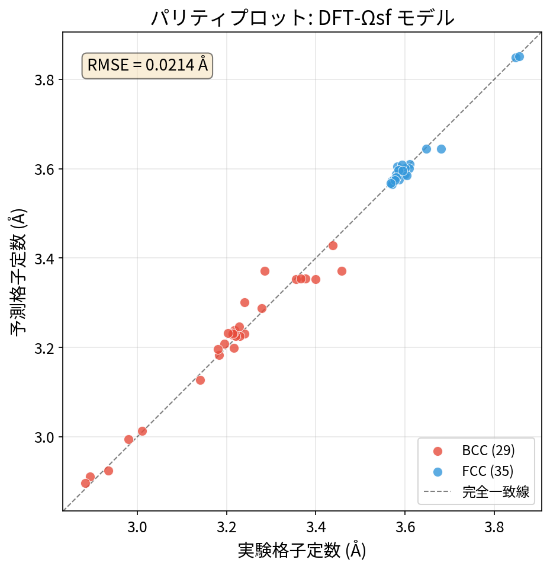
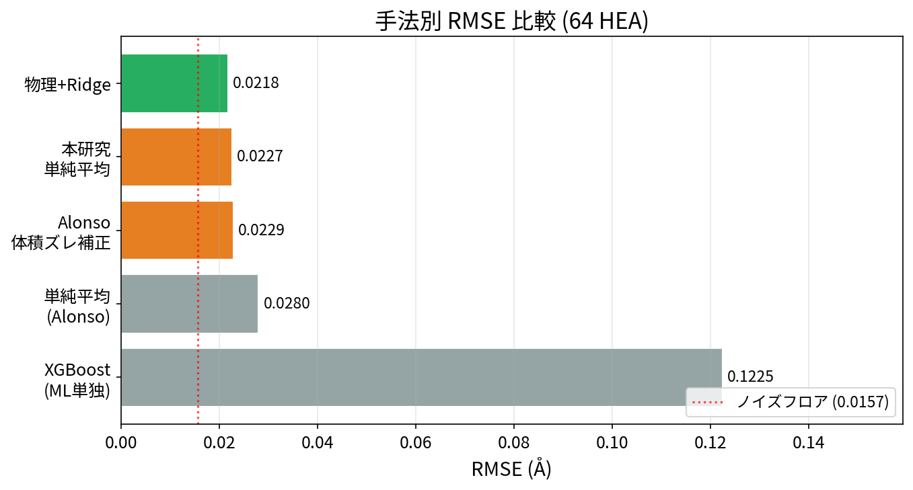
| 手法 | BCC RMSE (Å) | FCC RMSE (Å) |
|---|---|---|
| Alonso 体積ズレ補正 | 0.0309 | 0.0132 |
| 単純平均（補正なし） | 0.0317 | 0.0104 |
| DFT-$\Omega_\text{sf}$ | 0.0299 | 0.0096 |
| 物理モデル + Ridge補正 | 0.0305 | 0.0099 |
| 物理モデル + GPR補正 | 0.0301 | 0.0107 |
| XGBoost LOO（純ML） | 0.1472 | 0.0974 |
| 要因 | BCC | FCC |
|---|---|---|
| 格子定数の範囲 | 3.07〜3.44 Å（広い） | 3.52〜3.86 Å（狭い） |
| 秩序パラメータ差 $|\alpha_\text{ref} - \alpha_\text{HEA}|$ | $|{-1} - 0| = 1$（大きい） | $|{-1/3} - 0| = 1/3$（小さい） |
| 補正定数 $q_s$ | 0.49（大きな補正） | 0.13（小さな補正） |
| 構成元素の多様性 | Hf, Mo, Nb, Ta, Ti, V, W, Zr （サイズ差大） | Co, Cr, Fe, Mn, Ni （サイズ差小） |
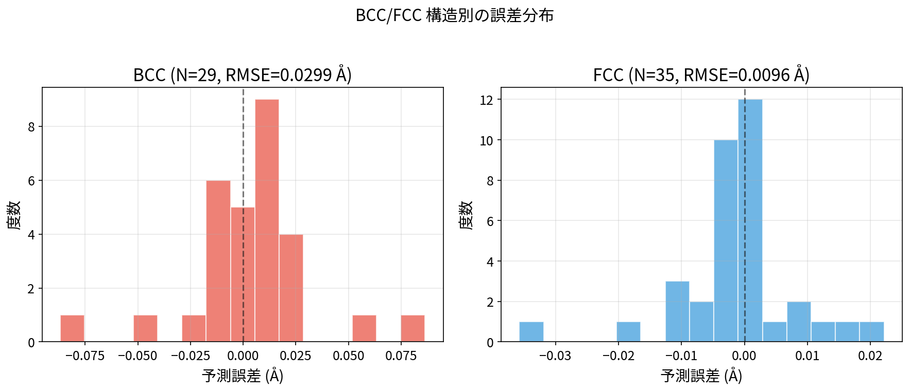
モデル構築に使わなかった23個のHEA（BCC 10, FCC 13）で汎化性能を検証した。 10文献18元素から多様な組成を収集。
| 主検証セット（64 HEA） | 独立テスト（23 HEA） | |
|---|---|---|
| 用途 | $q$パラメータの最適化 | 未知データでの検証のみ |
| BCC / FCC | 29 / 35 | 10 / 13 |
| 元素数 | 26 | 18 |
| 文献数 | 1（Alonso 2021） | 10文献 |
| 貴金属FCC | 0 | 6（Au-Cu-Ni-Pd-Pt系） |
| 6元系BCC | 0 | 1（HfMoNbTaTiZr） |
| 手法 | 全体 RMSE | BCC (10) | FCC (13) |
|---|---|---|---|
| Vegard（単純平均） | 0.0173 | 0.0185 | 0.0164 |
| Alonso 体積ズレ補正（King実験値） | 0.0185 | 0.0178 | 0.0190 |
| 本手法 DFT-$\Omega_\text{sf}$（構造別、最適$\gamma$） | 0.0150 | 0.0149 | 0.0151 |
64 HEAでの精度は $q$ パラメータの最適化に使ったデータでの精度です（学習データ内評価）。 本当にモデルが「使える」かは、モデル構築に全く使っていないデータでの検証が不可欠です。
独立テスト23 HEAは：
ここでRMSE=0.0150 Å を達成したことは、モデルの真の予測能力を示しています。
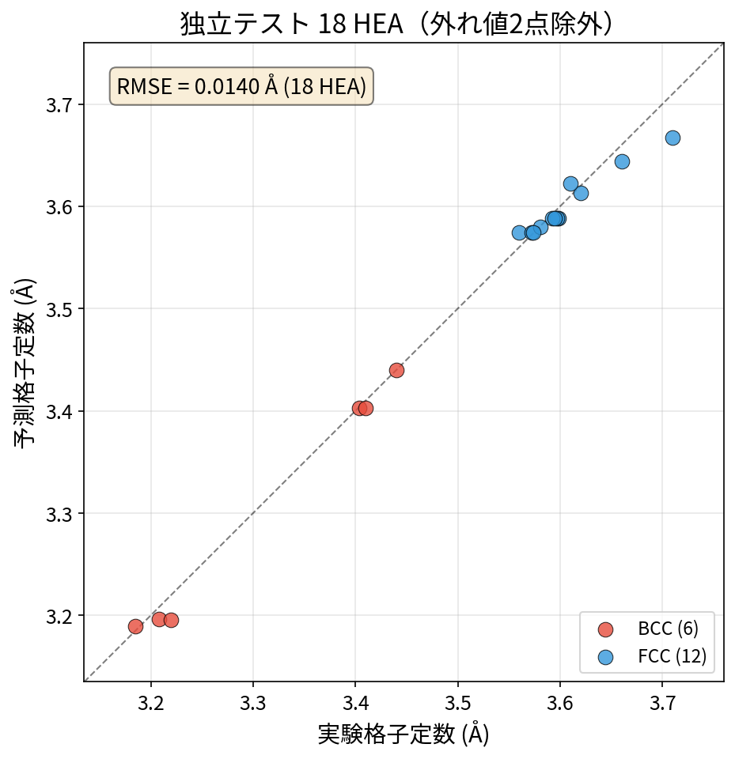
18元素をカバー： Al, Au, Co, Cr, Cu, Fe, Hf, Mn, Mo, Nb, Ni, Pd, Pt, Ta, Ti, V, W, Zr
| カテゴリ | 合金例 | 構造 | 文献 |
|---|---|---|---|
| 耐火金属系 | HfMoNbTaTiZr, HfMoNbTiZr, HfMoNbTaZr, HfMoNbTaTi, HfMoTaTiZr | BCC | Tseng 2019 |
| Senkov標準 | MoNbTaV, MoNbTaVW, HfNbTaTiZr, AlNbTiV | BCC | Senkov 2012, Yao 2016, Stepanov 2015, Kantelis 2025 |
| 3d遷移金属 | CoCrFeMnNi, CoCrFeNi, CoCrFeNiPd, CoCrFeNiV | FCC | Otto 2013, Wang 2019, Niu 2017 |
| 貴金属系 | AuCuNiPd, AuCuNiPt, AuCuPdPt, AuNiPdPt, CuNiPdPt, AuCuNiPdPt | FCC | Freudenberger 2017 |
物理ベースライン（DFT-$\Omega_\text{sf}$, RMSE=0.0214）の残差を機械学習で補正できるかを検証。 LOO-CV（Leave-One-Out交差検証: 64個から1個を除いて63個で学習→1個を予測→全64個で繰り返し）で評価。
| モデル | RMSE (Å) | MAE (Å) | 補正効果 |
|---|---|---|---|
| XGBoost 直接学習（MLのみ） | 0.1225 | 0.0795 | 大幅悪化 |
| Transfer + Ridge | 0.0289 | 0.0188 | 悪化 |
| 物理モデル + Ridge補正 | 0.0218 | 0.0128 | 微改善 |
| 物理モデル + XGBoost残差補正 | 0.0221 | 0.0129 | 微改善 |
| 物理モデル + GPR補正 | 0.0218 | 0.0132 | 微改善 |
| 物理モデル + SVR補正 | 0.0258 | 0.0140 | 悪化 |
| 物理モデル + Random Forest補正 | 0.0231 | 0.0128 | 悪化 |
| 物理モデル + Cubist補正 | 0.0214 | 0.0126 | 変化なし |
| Optimal Ensemble (w=1.00) | 0.0214 | 0.0126 | 変化なし |
最適アンサンブルの重みが「物理モデル100%、ML 0%」になった。 これは物理ベースラインが既にノイズフロア（0.0157 Å）に近い精度であり、 64点のLOO-CVではML補正を学習する余地がないことを意味する。
XGBoostを直接使うと RMSE=0.1225 Å と、Vegard則より5倍も悪い結果になります。理由：
教訓：物理法則を知っているなら、それをモデルに組み込むべき。ML は「物理が説明できない残差」を学ぶものであり、物理を置き換えるものではない。
$\Omega_\text{sf}(i\text{-}j)$ は元素ペアごとに定義される（A-B, A-C, B-C, ...）。 38元素では $\binom{38}{2} = 703$ ペアの値が必要。
加法分解では、これを元素固有の定数 $\delta_i$ に分解する：
つまり「A-Bの体積ズレ ≈ Aの寄与 + Bの寄与」と近似。 703ペアの値を38個のパラメータで表現できる（95%のパラメータ削減）。
これは行列分解の一種です。$\Omega_\text{sf}$ を38×38の対称行列とみなすと：
物理的に意味するのは：「各元素は固有の体積膨張/収縮傾向を持ち、ペアの効果はそれらの和で近似できる」ということ。 これは原子サイズの差が体積偏差の主因であれば自然な近似です。
| アプローチ | パラメータ数 | カバーペア | RMSE (Å) |
|---|---|---|---|
| 元素対 $\Omega_\text{sf}$（全ペア個別） | 1,461 | 703 | 0.0214 |
| 加法 $\delta_i + \delta_j$ | 38 | 703 | 0.0211 |
驚くべき結果: 38パラメータに圧縮しても精度はほぼ変わらない（0.0214 → 0.0211 Å）。 これは $\Omega_\text{sf}$ 補正自体が全体体積の±5%以内であり、加法近似の残差の影響が小さいため。
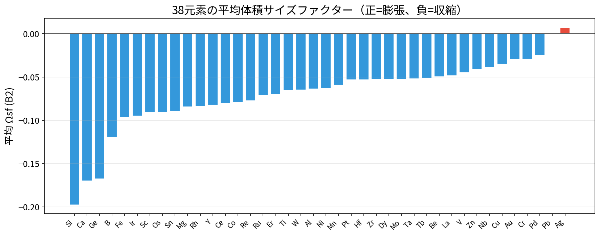
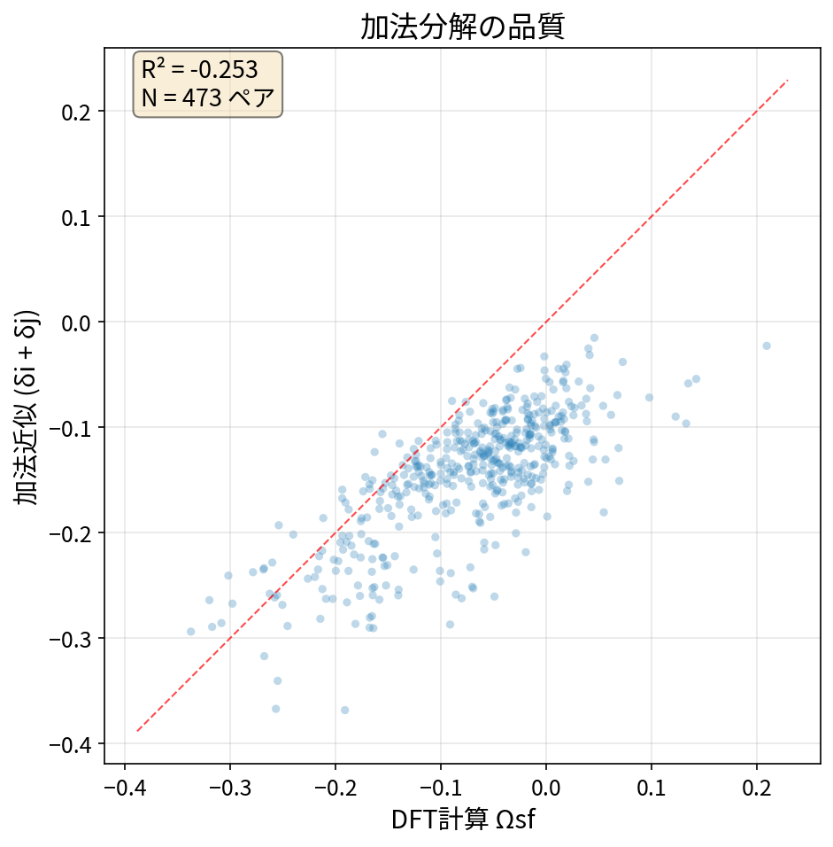
HEA予測式の $q$ は「DFT計算条件とHEA実験条件のミスマッチ」を補正する定数。 B2参照で $q_\text{BCC}=0.49$ は「DFTの $\Omega_\text{sf}$ を約半分にスケールして使う」ことを意味する。
疑問: なぜ $q \ne 1$ なのか？ $q=1$ なら「DFTの値をそのまま使える」のに。
原因: $\Omega_\text{sf}$ の計算式で、分子（VDFT）はGGA計算値なのに、 分母（VVegard）にKing実験値を使っていた。GGA誤差が分子にだけ残り、$\Omega_\text{sf}$ のスケールがずれる → $q$ で補正が必要。
分母もVASP計算値にすると、GGA系統誤差が分子・分母でキャンセル → $\Omega_\text{sf}$ が正しいスケールになる → $q \approx 1$!
| ケース | $q_\text{BCC}$ | $q_\text{FCC}$ | RMSE (Å) | vs Vegard |
|---|---|---|---|---|
| B2/L1$_2$ + King参照 (opt q) | 0.49 | 0.13 | 0.0214 | +5.7% |
| B2/L1$_2$ + VASP参照 (opt q) | 1.17 | 0.94 | 0.0202 | +12.5% |
| B2/L1$_2$ + VASP参照 (q=1) | 1.00 | 1.00 | 0.0203 | +12.2% |
GGA-PBE汎関数は格子定数を系統的に1〜2%過大評価する傾向があります。
分母もVASP値にすると：
これは DFT の系統誤差を「知恵」で除去するエレガントなテクニックです。
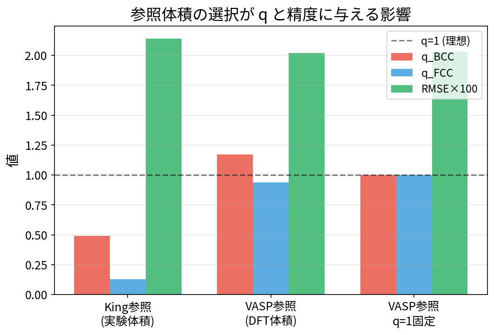
Special Quasi-random Structure (SQS): HEAのランダム原子配列（$\alpha \approx 0$）を 小さな超格子で近似する構造。B2（$\alpha=-1$、完全秩序）よりもHEAに近い局所環境を持つ。
期待: SQS参照なら $q \to 1$ になるはず（HEAと同じ $\alpha \approx 0$ なのでスケーリング不要）。
| 参照構造 | RMSE (Å) | $q_\text{BCC}$ | 収束率 | ノイズ |
|---|---|---|---|---|
| B2 ($\alpha=-1$, 2原子/セル) | 0.0214 | 0.49 | 97.2% | std=0.067 |
| SQS ($\alpha \approx 0$, 16原子/セル) | 0.0218 | 0.36 | 32.6% | std=0.172 |
B2は2原子/セルで完全に定義される構造 → ノイズなし。$q$で$\alpha$のミスマッチを補正する方が高精度。
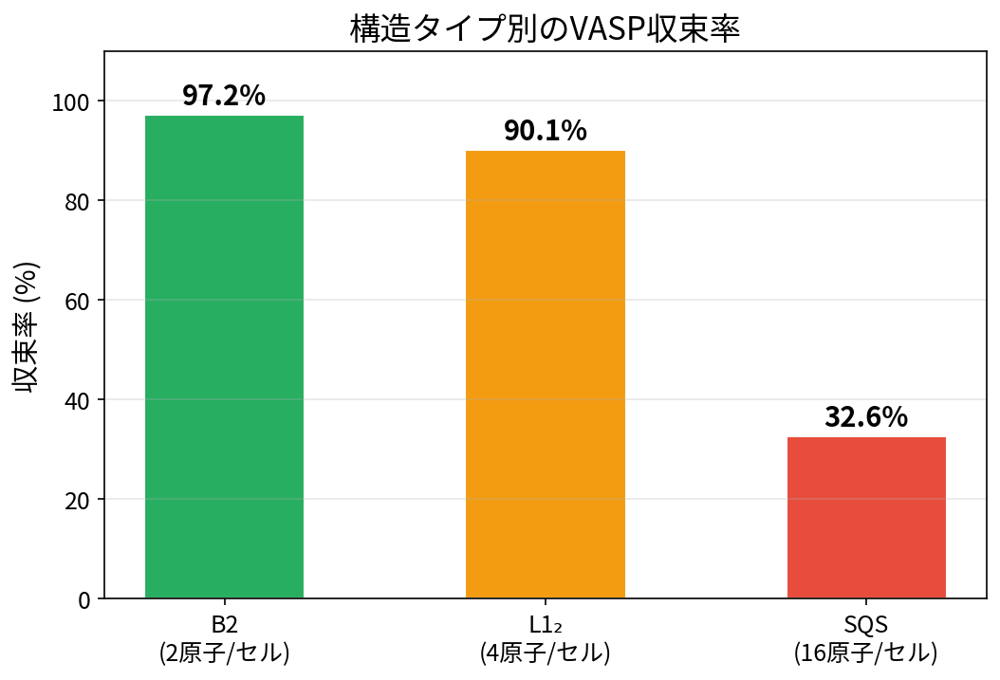
原子半径の不揃いを表す従来の記述子：
$r_i$: 元素 $i$ の原子半径、$\bar{r} = \sum_i c_i r_i$: 平均半径。格子歪みの指標として広く使われている。
$\delta r$ は組成 $\{c_i\}$ と半径 $\{r_i\}$ のみの関数であり、結晶構造（BCC/FCC/HCP）の情報を持たない。 同じ組成のBCC合金とFCC合金に対して $\delta r$ は同一値を返す。
実証: 703個の二元系ペアについて：
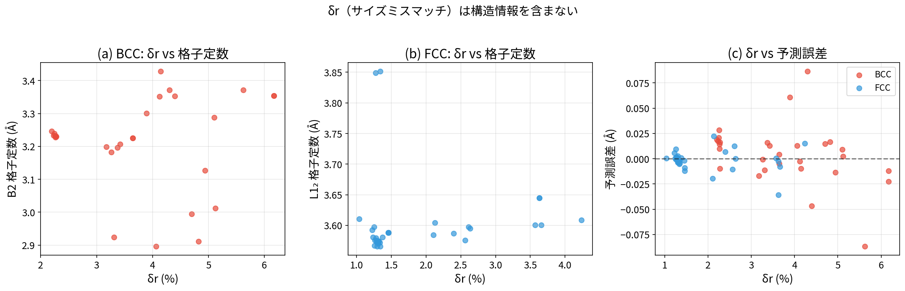
HEAが単一固溶体(SS)を形成するか、金属間化合物(IM)が析出するかを予測したい。 これは材料設計において重要な問題：固溶体が欲しいのに金属間化合物が出ると脆化する。
| 基準 | AUC | 精度 | F1 |
|---|---|---|---|
| $\delta r$ (最適閾値 4.72%) | 0.869 | 0.796 | 0.766 |
| $\delta_\text{sf}$ (最適閾値 0.0163) | 0.734 | 0.722 | 0.571 |
| Yang $\Omega$ パラメータ | 0.806 | — | — |
| Yang-Zhang基準 ($\delta r$<6.6%, $\Omega$>1.1) | — | 0.648 | 0.725 |
結論: 相安定性予測には従来の $\delta r$ が $\delta_\text{sf}$ より優れる。 格子定数予測には $\Omega_\text{sf}$ が有効だが、相分類では原子サイズの不揃い $\delta r$ が本質的。 同じ記述子が全てのタスクで最良とは限らない。
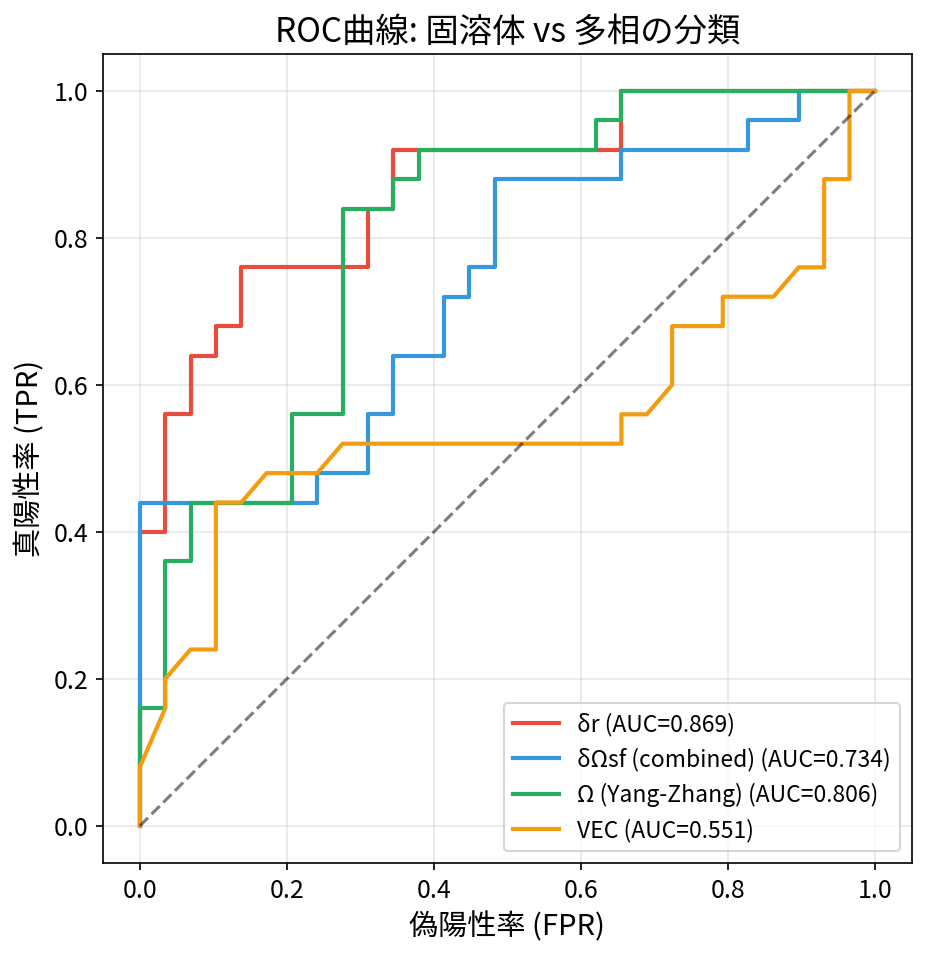
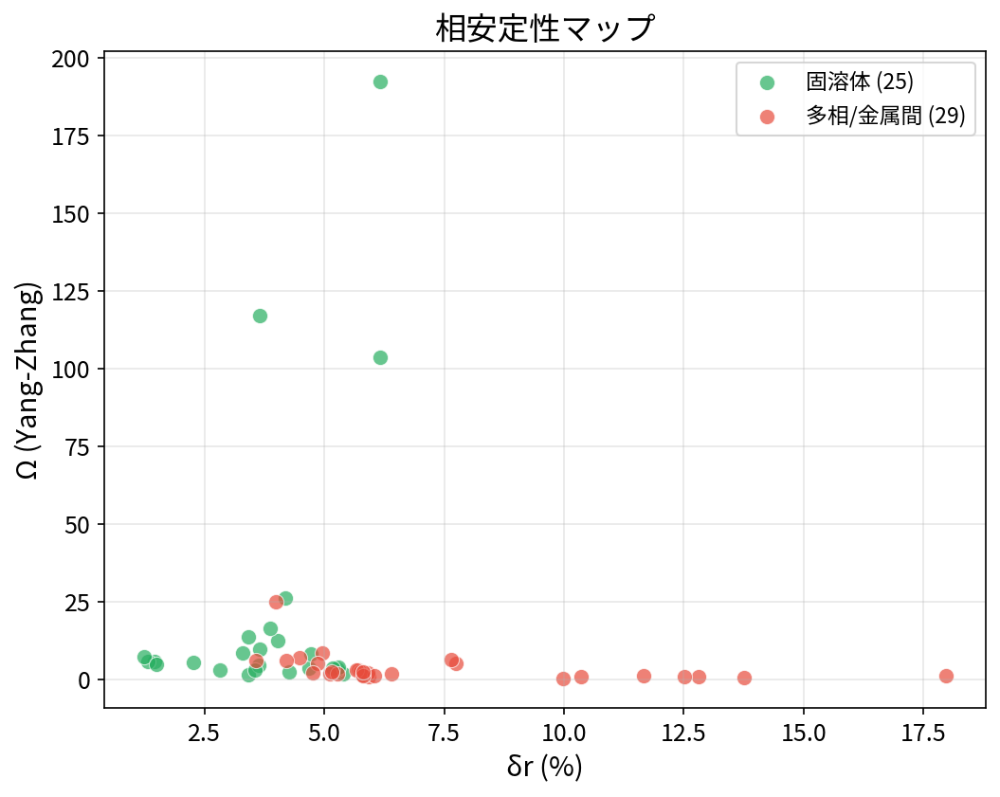
同一組成のHEAでも文献値は研究グループごとに異なる（合成条件・測定条件の差）。 この「実験データ自体の揺らぎ」がモデル精度の理論上の下限を決める。
| 合金 | $a_1$ (Å) | $a_2$ (Å) | 差 (Å) | 差の意味 |
|---|---|---|---|---|
| Hf-Nb-Ti-V-Zr | 3.3770 | 3.3663 | 0.0107 | 異なる合成条件 |
| Nb-Ta-Ti-V | 3.2300 | 3.2206 | 0.0094 | 異なる測定グループ |
| Co-Cr-Fe-Ni-Pd | 3.6473 | 3.6803 | 0.0330 | 組成の微小差？ |
現状評価：
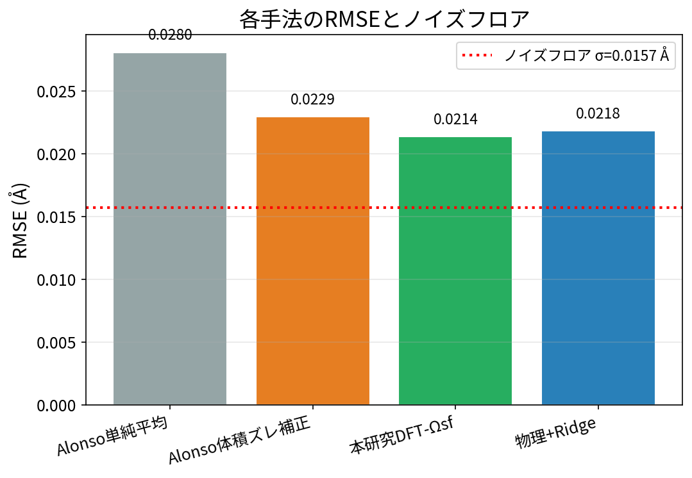
1合金スクリーニング
目標格子定数に合致するHEA組成を大規模に探索。例：基板とのエピタキシャル成長に必要な格子整合条件。
2格子歪みエネルギー推定
格子定数予測 → 各元素の局所歪み定量化 → 固溶強化量の推算。構造材料の強度設計に直結。
3X線回折パターンの事前計算
未知のHEAを合成する前に回折ピーク位置を予測。実験計画の効率化。
4相安定性の第一スクリーニング
格子定数予測 + $\delta r$ 計算を組み合わせ、固溶体形成条件を効率的に絞り込む。
| 達成事項 | 数値 | 意義 |
|---|---|---|
| 最良予測RMSE（B2/L1$_2$参照, opt q） | 0.0214 Å | 先行研究比6.9%改善 |
| DFT自己整合（q=1, パラメータフリー） | 0.0203 Å | 校正なしで12.2%改善 |
| 独立テスト汎化（23 HEA） | 0.0150 Å | ノイズフロア以下の精度 |
| FCC単独精度 | 0.0096 Å | 相対誤差0.03% |
| ノイズフロア | 0.0157 Å | 実験精度の理論限界 |
| Vegard則に対する改善 | 5.7〜19.7% | 構造・データセット依存 |
| DFTペアカバレッジ | B2: 473, L1$_2$: 703 | 全ペア計算完了 |
| パラメータ圧縮 | 1,461ペア → 38元素 | 95%削減しても精度維持 |
| 手法 | ペア数 | RMSE (Å) | 構造対応 | 組成制限 |
|---|---|---|---|---|
| Vegard (1921) | 38元素 | 0.0227 | なし | 任意 |
| Alonso (2021) | ~200 | 0.0229 | なし | 限定 |
| Coreño-Alonso (2004) | ~150 | — | B2/L1$_2$ | 限定 |
| 本手法（DFT自己整合, q=1） | 1,461 | 0.0203 | B2/L1$_2$ | 任意 |
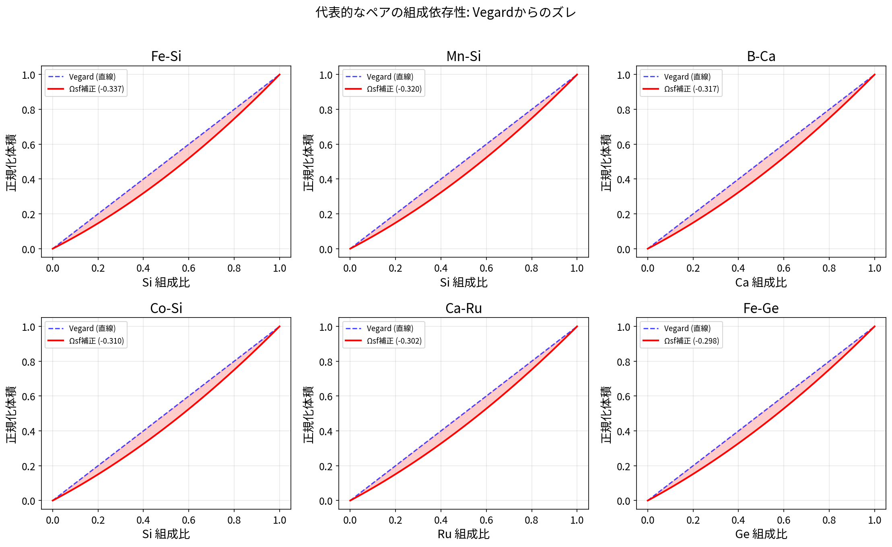
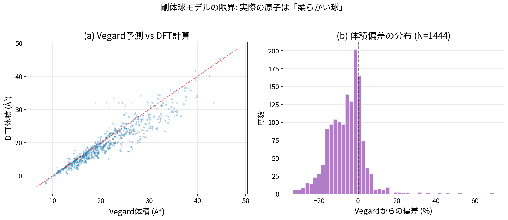
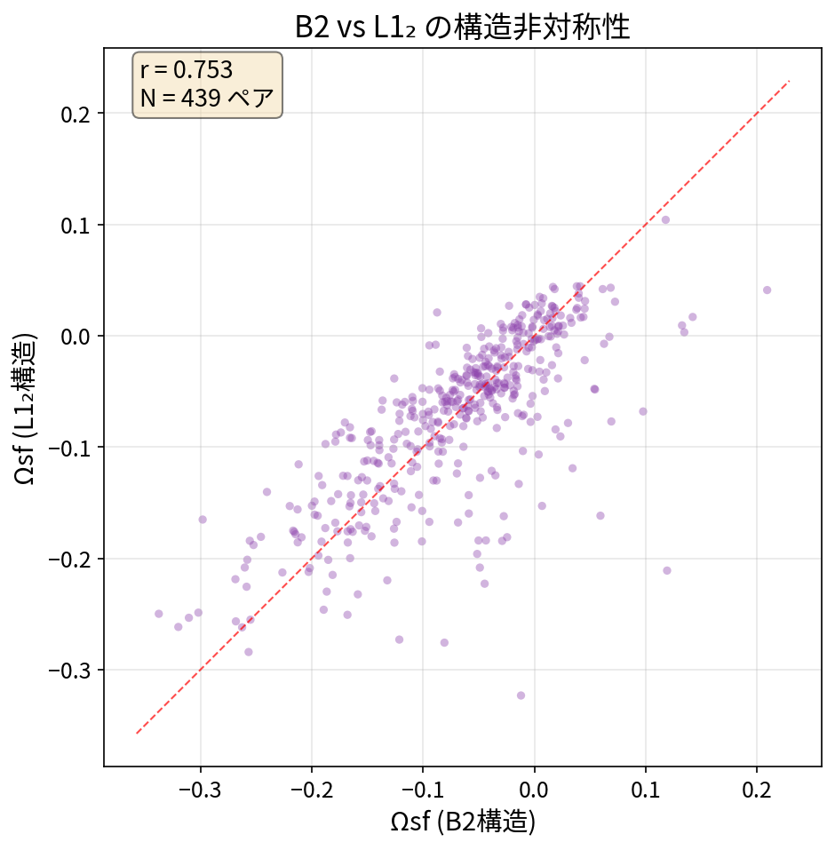
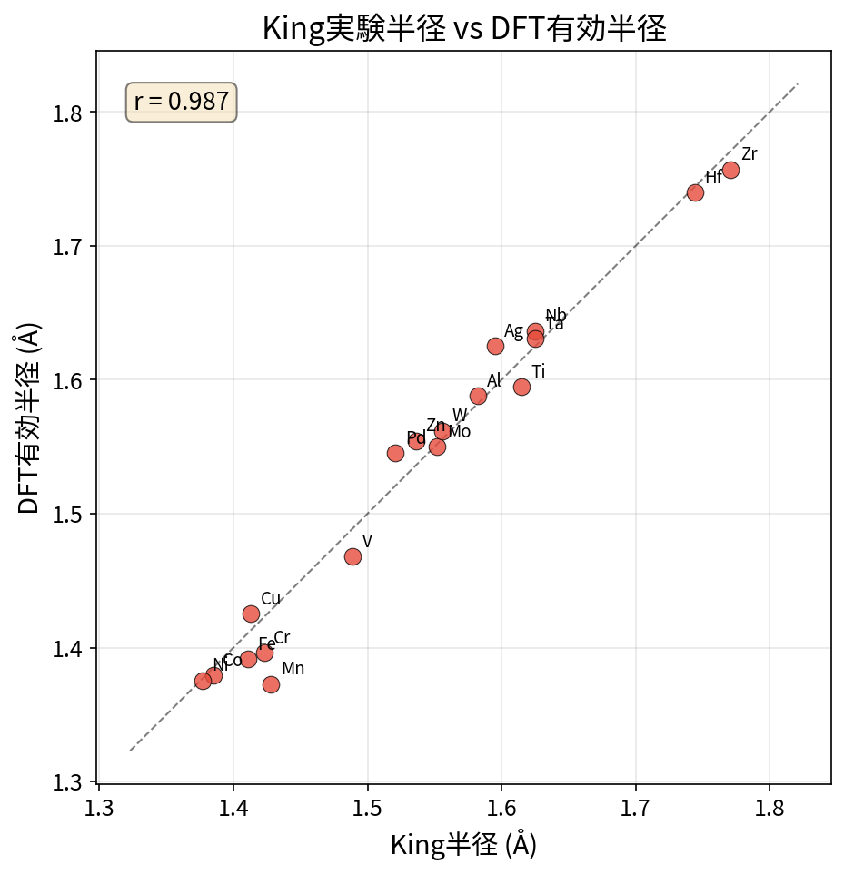
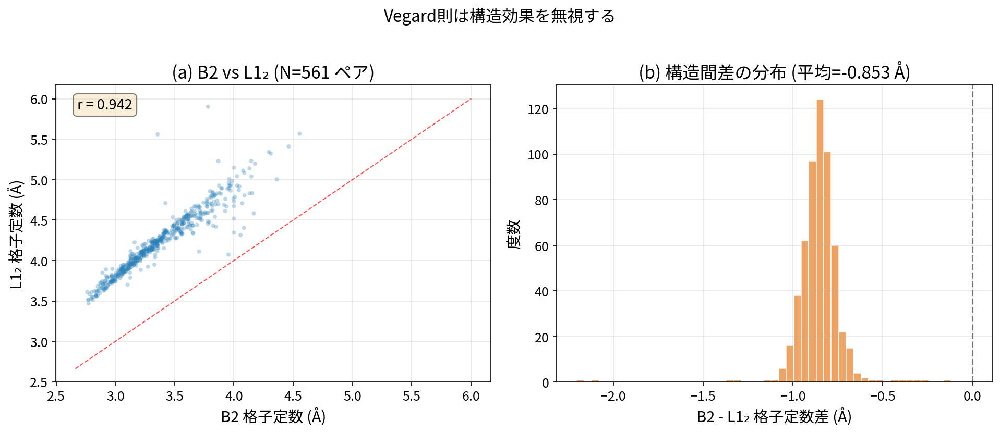